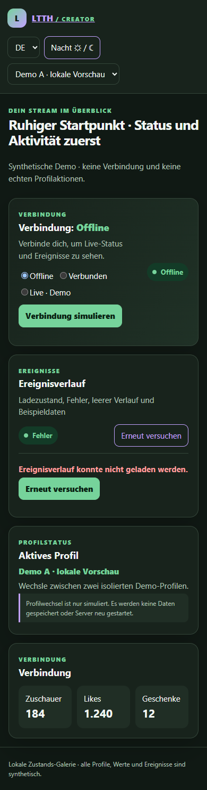
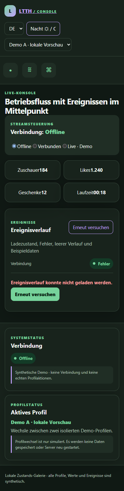
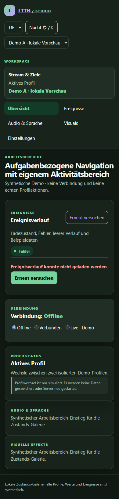

01 · Creator-Überblick
Ruhige Startfläche; der Ereignisverlauf bleibt ein kompakter Aktivitätsbereich neben Profilstatus.
Ereignisverlauf und Profile im Vergleich
Jede Variante zeigt Laden → Fehler mit Retry → leerer Verlauf → synthetische Ereignisse sowie den Profilwechsel Demo A ↔ Demo B. Theme und Sprache lassen sich pro Seite umschalten. Alle Inhalte sind lokal und simuliert.

Ruhige Startfläche; der Ereignisverlauf bleibt ein kompakter Aktivitätsbereich neben Profilstatus.

Betriebsorientiertes Layout; Ereignisse stehen im Zentrum und Profile/Systemstatus bleiben in der Seitenleiste.

Aufgaben-Navigation; Ereignisse sind ein Bereich, Profilstatus und Verbindung stehen in getrennten Karten.
Kein Produktserver, keine externen Endpunkte, keine echten Konten/Profile und keine Persistenz. Der Retry und die Profilanzeige verarbeiten nur synthetische Demo-Zustände. Accessibility- und Design-Audit öffnen.